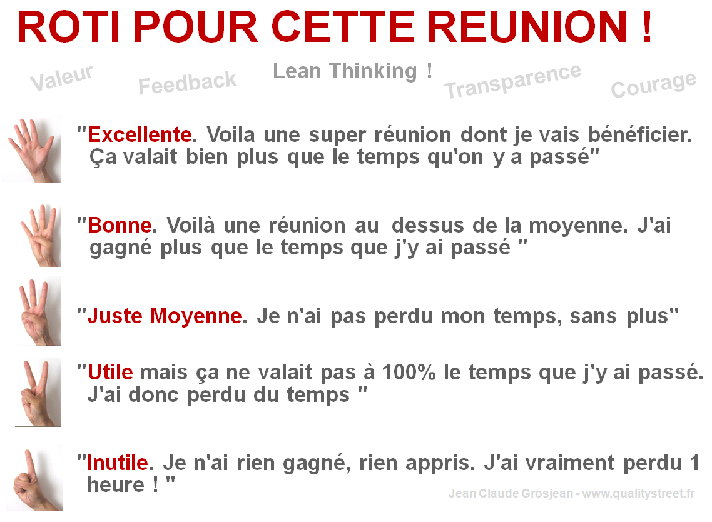

13/06 : Code Retreat legacy !
Toute cellule morte avec exactement 3 voisines vivantes, nait par reproduction
Toute cellule vivante avec plus de 3 voisines vivantes, meurt par surpopulation
Toute cellule vivante avec moins de 2 voisines vivantes, meurt par sous-population
Toute cellule avec exactement de 2 voisines vivantes reste dans l'état actuel
